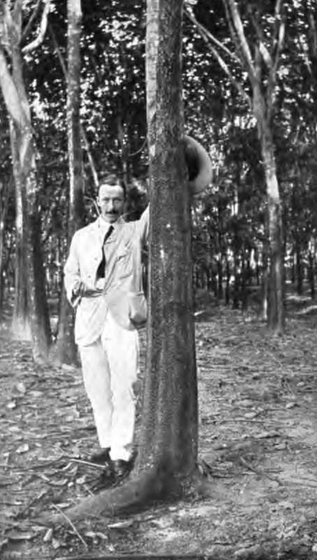

Harvesting Operations. Part 2
Description
This section is from the book "Rubber And Rubber Planting", by R. H. Lock. Also available from Amazon: Rubber And Rubber Planting.
Harvesting Operations. Part 2
The fact is that no method of large incisions truly conforms to Wright's 'definition of good tapping, since such incisions entail the destruction, if not the removal, of a considerable mass of living cortex. This destruction goes much deeper than that caused by careful paring, and often involves the cambium itself. On the other hand, a small clean prick, such as may be made with the point of a pen-knife, generally heals up completely without any sloughing off of cortical tissue, in spite of the fact that the blade has actually penetrated to the cambium. Such a prick also leads to a considerable flow of latex in comparison with the size of the wound inflicted.
The time required for making small pricks singly is clearly prohibitive of their use as a practical method. For the rapid infliction of a large number of pricks the rotating spur-shaped pricker was introduced by Bowman and Northway in 1905, and has enjoyed a considerable vogue in Ceylon. A single stroke from one of these tools produces a row of pricks running across the bark of the tree. Owing to the difficulty of collecting the latex thus liberated by any other method, the use of the spur-shaped pricker was generally combined with a shallow system of paring. The pricker was run along the paring cut either on the same day or on the day following, and the cut provided a channel down which the latex could flow. The great theoretical objection to this method lay in the closeness of the pricks inflicted on successive days. Although the bark of a healthy tree generally recovered from the operation, there was a considerable sloughing off of cellular tissue. Moreover, in the freshly pricked region the blockage of phloem tubes necessarily produced must have amounted to partial ringing of the tree. It seems clear too, that in some cases the use of this method was associated with an epidemic of woody nodules (see Chapter VIII).
Plate VII
Hevea Tree pricked with Serrated Knife
Photo C. Nortkway
Finally, there is clear evidence that a better yield, without any greater loss of bark, is obtained in the long run by simple paring than by combined paring and pricking.
Pricking Methods Under Trial
A method has been developed on an estate in the Southern Province of Ceylon which seems to avoid many of the drawbacks hitherto described. The trees are tapped on a herring-bone system, and each rib of the herring-bone is simply represented by four small pricks made by a single insertion of a "serrated knife." This pricker has square teeth a quarter of an inch wide, with a similar interval between each tooth. They are thus practically identical with what is known as Macadam's comb pricker, except that the number of teeth is only four. A shallow conducting channel is cut vertically in the bark of the tree, and with a little assistance from the tapper the latex flows into the channel and down the tree. The original incisions, covering an area 2 inches in breadth, are made at vertical' intervals of a foot, and on each day following a similar set of incisions is made at to f inch below the old ones. When the first area is completed after 24 days' tapping, the whole operation is repeated on the opposite side of the tree. Subsequently similar figures are intercalated between the old ones until only one or two narrow strips of bark are left untapped. A return is then made to the original area after a period of rest, which is more or less extended according to the freedom with which the latex is found to flow.
The method here described is open to the same abuse as all other pricking systems, in the temptation which it presents of overtapping small trees. But if no trees under 18 inches in circumference are tapped, and if the method is adopted of resting any field which shows a falling off in yield, the system seems to be largely free from theoretical disadvantages. According to Mr Tisdall, a noticeable feature in this method of pricking is the immunity of the tree from canker and bark-rot in comparison with the paring system, and the healthy appearance of the foliage after an extended period of tapping. So far the disadvantages appear to be the difficulty of collection in wet weather and the extra cost of tapping as compared to paring. On the estate where the system has been evolved, highly satisfactory yields are said to be obtained by this method. The system may be recommended for trial elsewhere, bearing in mind that a method of tapping which suits one district is often quite unsuccessful in another.
Another incision system, suggested by Mr Kelway Bamber, has been on trial for some time by the Botanic Department of Ceylon. The method is deserving of mention on account of the large yields which have been obtained from young trees without apparent damage
Bamber's method consists in cutting two vertical channels on opposite sides of the tree, and pricking down these from top to bottom with transverse cuts an inch apart The cuts are made with a thin blade about three-quarters of an inch wide and rounded at the end. On alternate days two similar channels are cut an inch to the right of the former ones and pricked in the same manner. When the whole of the circumference has been tapped in this way, the tree is rested until the beginning of the second month from the commencement of tapping, and the process is then repeated, the same vertical channels being cut smooth and re-pricked. In this way the larger trees are tapped more frequently than the smaller ones. On a particular acre bearing 147 trees the average number of tappings was 75 in a year. The trees were just five years old at the commencement of tapping, and ranged in circumference from 10 to 21 inches. All the trees were tapped without exception, and the average yield for twelve months was 18 ounces per tree, or 164 lbs. per acre. This is a remarkably high yield for 5—6-year-old trees at an elevation of 1500 feet in Ceylon. At the end of the year only a few of the smallest trees appeared to have suffered any harm from the process.
The chief objections to this system are the large amount of labour required, and the large proportion of the rubber which is obtained in the form of scrap, namely, nearly 50 per cent, of the total quantity. It is however a method which may well be adopted in tapping trees which it is ultimately intended to thin out on closely planted estates. How far it can be adopted as a permanent system of tapping can only be determined by further trial.
Continue to: